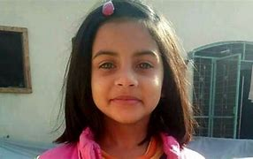
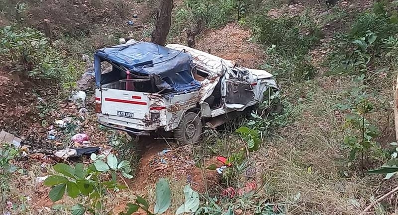

Crimes
we're Combatting

A six years old girl has been found murdered in Dhanusha district. She is Rakhi Yadav of Sabaila municipality. Spokesperson of Dhanusha Police, Sub-Inspector Ranjan Awale, shared that the girl was found in a ditch near Satokhar pond. Her clothes were found near the pond.
Six-year-old girl found murdered
A six years old girl has been found murdered in Dhanusha district. She is Rakhi Yadav of Sabaila municipality. Spokesperson of Dhanusha Police, Sub-Inspector Ranjan Awale, shared that the girl was found in a ditch near Satokhar pond. Her clothes were found near the pond.
Read more
The body has been taken to Provincial Hospital, Janakpur, for post mortem. Police have arrested two persons susp ecting their involvement in the incident, added Awale.
Corruption cases up by 58 per cent
Transparency International, in a report released today, has said tha t corruption in the country has increased by 58 per cent in the past one year.The report, ‘Global Corruption Barometer - Asia 2020’ revealed this on the basis of a public opinion survey conducted among thousands of citizens.
Read more
The report also shows that 50 per cent of corruption cases are related to persons or organisations connected with the Office of the President or the Office of the Prime Minister.

As many as six persons including a nine-month-old baby were killed while eight others have been injured in an accident in Dharampani, Bandipur Rural Municipality-6 of Tanahun district, on Friday evening.
Six including an infant killed in Bandipur jeep accident
As many as six persons including a nine-month-old baby were killed while eight others have been injured in an accident in Dharampani, Bandipur Rural Municipality-6 of Tanahun district, on Friday evening.
Read more
The jeep (Ga 1 Ja 6555) they were travelling on was en route to Dharampani from Bachchhe when it fell around 100 meters off the road, shared Deputy Superintendent of Police Yubaraj Khadka.
 Kathmandu (7MV7P87H+VC)
Kathmandu (7MV7P87H+VC)